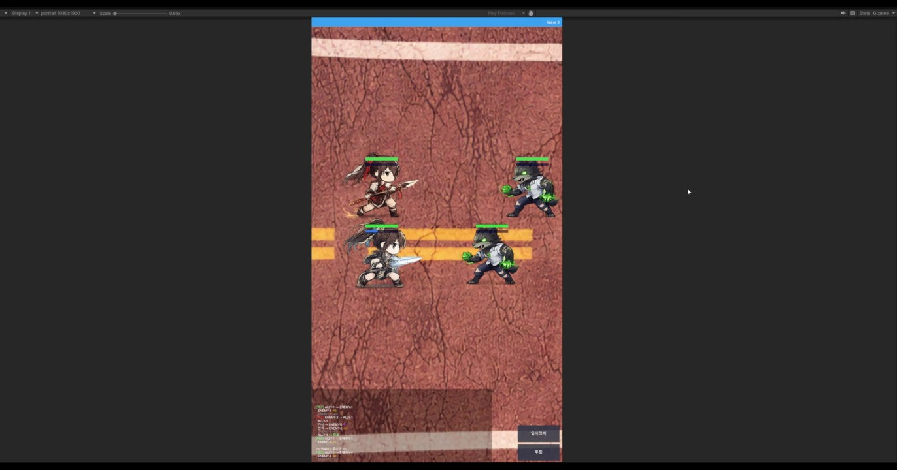
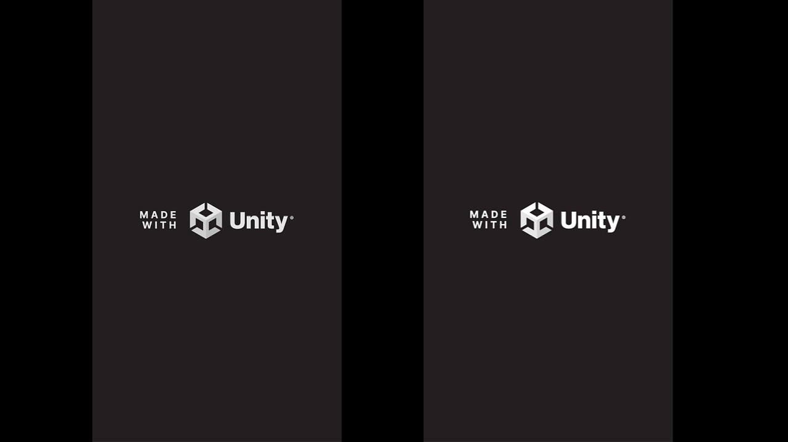
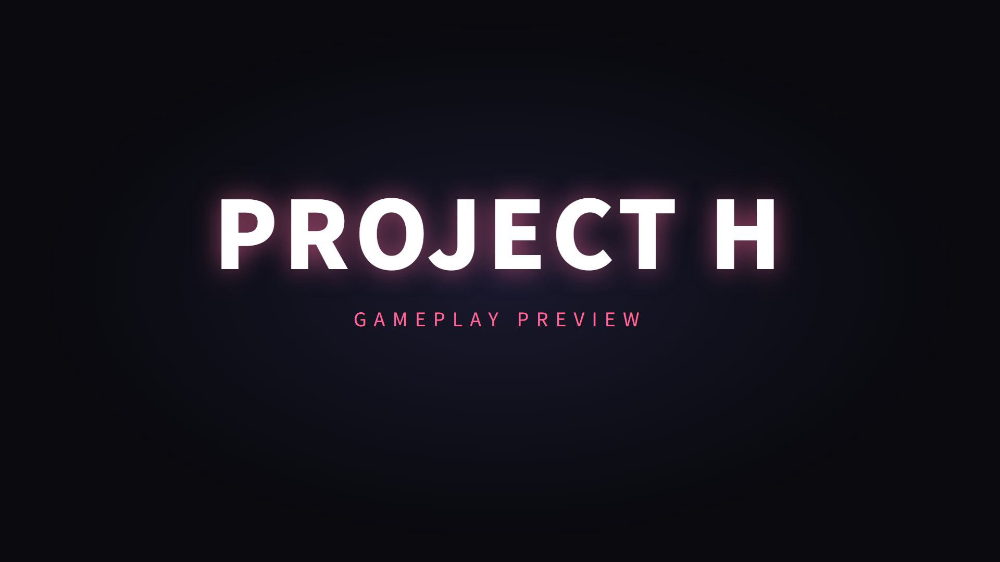
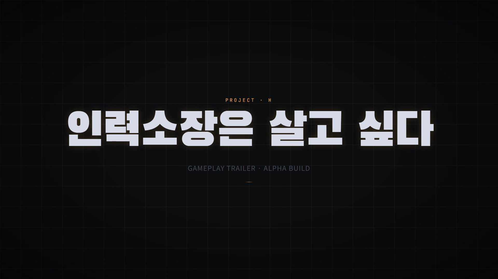

PART 3 · BUILD VIDEO GALLERY
P. 71

3번 · 0311

4번 · 0405

6번 빌드

7번 빌드
RECORD · 4편의 빌드 진화 (썸네일만)
FINAL BUILD · PROJECT-H-FINAL.MP4
8주차 최종 빌드. ▶ 버튼 클릭 시 슬라이드 안에서 재생.
3번 → 4번 → 6번 → 7번 → FINAL · 8주의 시각 기록